28. Design Google Maps
System Design: Google Maps
System Design: Google Maps
Understand the basics of a Google Maps system.
We'll cover the following
What is Google Maps?#
Let’s introduce the problem by assuming that we want to travel from one place to another. Here are the possible things that we might want to know:
- What are the best possible paths that take us to our destination, depending on the vehicle type we’re using?
- How long in miles is each path?
- How much time does each path take to get us to our destination?
A maps application (like Google Maps or Apple Maps) enables users to answer all of the above questions easily. The following illustration shows the paths calculated by Google maps from “Los Angeles, USA” to “New York City, USA.”

When do we use a maps service?#
Individuals and organizations rely on location data to navigate around the world. Maps help in these cases:
- Individuals can find the locations of and directions to new places quickly, instead of wasting their time and the costs of travel, such as gas.
- Individuals use maps to see their estimated time of arrival (ETA) and the shortest path based on current traffic data.
- Many modern applications rely heavily on maps, such as ride-hailing services, autonomous vehicles, and hiking maps. For example:
- Waymo’s self-driving car system uses Google Maps to navigate efficiently, quickly, and safely.
- Uber uses Google Maps as part of its application to assist drivers and provide customers with a visual representation of their journey.
- Routing and logistics-based companies reduce the time it takes to make deliveries. By using a map’s unique real-time and historical traffic data, it minimizes the overall cost of deliveries by reducing gas usage and time spent stuck in traffic.
In 2022, more than five million businesses are using Google Maps. It provides an API for enterprises to use a map system in their application.
How will we design Google Maps?#
We divide the design of Google Maps into five lessons:
- Requirements: In this lesson, we’ll list the functional and non-functional requirements of a Google Maps system. We will also identify the challenges involved in designing such a system. Lastly, we’ll estimate the resources like servers and bandwidth needed to serve queries by millions of users.
- Design: This lesson consists of the high-level and API design of a system like Google maps. We’ll describe the services and the workflow of the system.
- Meeting the challenges: We will discuss how we overcome the challenges that we highlighted in the requirements lesson.
- Detailed design: Based on the solution to the challenges, we will improve our earlier design and also elaborate on different aspects of it. We will describe the detailed design, including storage schema.
- Evaluation: This lesson explains how our designed Google Maps system fulfills all the requirements.
Let’s start by understanding the requirements for designing a system like Google Maps.
Requirements of Google Maps' Design
Requirements of Google Maps' Design
Understand the requirements to design a maps application like Google Maps.
Requirements#
Before we start requirements, let’s clarify that we will design a system like Google Maps by picking a few key features because actual Google Maps is feature-rich and complex.
Let’s list the functional and non-functional requirements of the system under design.
Functional requirements#
The functional requirements of our system are as follows.
- Identify the current location: Users should be able to approximate their current location (latitude and longitude in decimal values) on the world map.
- Recommend the fastest route: Given the source and destination (place names in text), the system should recommend the optimal route by distance and time, depending on the type of transportation.
- Give directions: Once the user has chosen the route, the system should list directions in text format, where each item in the list guides the user to turn or continue in a specific direction to reach the destination.
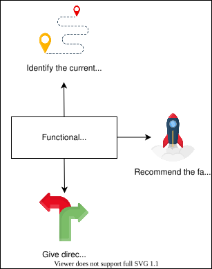
Non-functional requirements#
The non-functional requirements of our system are as follows.
- Availability: The system should be highly available.
- Scalability: It should be scalable because both individuals and other enterprise applications like Uber and Lyft use Google Maps to find appropriate routes.
- Less response time: It shouldn’t take more than two or three seconds to calculate the ETA and the route, given the source and the destination points.
- Accuracy: The ETA we predict should not deviate too much from the actual travel time.
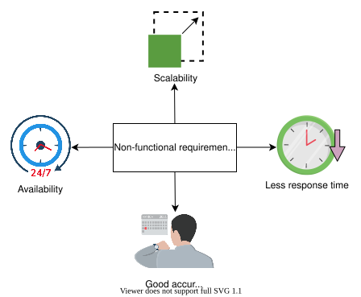
Note: We’re not getting into the details of how we get the data on roads and layout. Government agencies provide maps, and in some places, Google itself drives mapping vehicles to find roads and their intersection points. Road networks are modeled with a graph data structure, where intersection points are the vertices, and the roads between intersections are the weighted edges.
Challenges#
Some of the challenges that we need to focus on while designing a system like Google Maps are below:
- Scalability: Serving millions of queries for different routes in a second, given a graph with billions of nodes and edges spanning over 194 countries, requires robust scalability measures. A simple approach, given the latitude and longitude of the source and destination, would be to apply an algorithm like Dijkstra to find the shortest path between the source and the destination. However, this approach wouldn’t scale well for billions of users sending millions of queries per second. This is because running any path-finding algorithm on a graph with billions of nodes running a million times per second is inefficient in terms of time and cost, ultimately leading to a bad user experience. Therefore, our solution needs to find alternative techniques to scale well.
- ETA computation: In an ideal situation with empty roads, it’s straightforward to compute ETA using the distance and the speed of the vehicle we want to ride on. However, we cannot ignore factors like the amount of traffic on the roads and road conditions, which affect the ETA directly. For example, a road under construction, collisions, and rush hours all might slow down traffic. Quantifying the factors above to design our system is not trivial. Therefore, we’ll, categorize the factors above in terms of traffic load to complete our design.
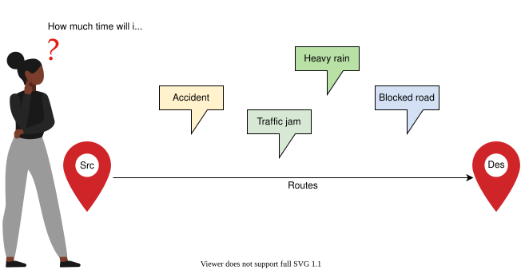
Resource estimation#
Let’s estimate the total number of servers, storage, and bandwidth required by the system.
Number of servers estimation#
To estimate the number of servers, we need to know how many daily active users are using Google Maps and how many requests per second a single Google Maps server can handle. We assume the following numbers:
- Daily active users who use Google Maps: 32 million (about 1 billion monthly users).
- Number of requests a single server can handle per second: 8,000.
The number of servers required has been calculated using the below formula:
requests handled per serverNumber of active users=4K servers
Storage estimation#
Google Maps is essentially a system with a one-time storage requirement. The road data from many countries has already been added, which is over 20 petabytes as of 2022. Since there are minimal changes on the road networks, the daily storage requirement is going to be negligible for Google Maps. Also, short-term changes in the road network is a small amount of data as compared to the full network data. Therefore, our storage needs don’t change rapidly.
Bandwidth estimation#
As a standard practice, we have to estimate the bandwidth required for the incoming and outgoing traffic of our system. Most of the bandwidth requirements for Google Maps are due to requests sent by users. Therefore, we’ve devised the following formula to calculate bandwidth:
Totalbandwidth=Totalrequests_second×Totalquery_size
The Totalrequests_second represents the number of requests per second, whereas the Totalquery_size represents the size of each request.
Incoming traffic
To estimate the incoming query traffic bandwidth, we assume the following numbers:
- Maximum number of requests by a single user per day: 50.
- Request size (source and destination): 200 Bytes.
Using the assumptions above, we can estimate the total number of requests per second on Google Maps using the following formula:
Totalrequests_second=24×60×60Daily active users×Requestsper_user=18,518 requests per second.
We can calculate the incoming query traffic bandwidth required by Google Maps by inserting the request per second calculated above and the size of each request in the aforementioned bandwidth formula.
Bandwidth Required for Incoming Query Traffic
| No. of requests per second | Request size (Bytes) | Bandwidth (Mb/s) |
| 18518 | 200 | f29.63 |
Outgoing traffic
Outgoing application traffic will include the response that the server generates for the user when they make a navigation request. The response consists of visuals and textual content, and typically includes the route shown on the map, estimated time, distance, and more detail about each step in the route. We assume the following numbers to estimate the outgoing traffic bandwidth:
- Total requests per second (calculated above): 18,518.
- Response size: 2 MB + 5 KB = 2005 KB.
- Size of visual data on average: 2 MB.
- Size of textual data on average: 5 KB.
We can calculate the bandwidth required for outgoing traffic using the same formula.
Bandwidth Required for the Outgoing Application Traffic
| No. of requests per second | Response size (KB) | Bandwidth (Gb/s) |
| 18518 | 2005 | f297.03 |
Building blocks we will use#
Now that we’ve completed our estimates of resources required, let’s identify the building blocks that will be an integral part of our design for the Google Maps system. Below, we have the key building blocks:
- Load balancers are necessary to distribute user requests among different servers and services.
- Databases are required to store data in the form of a graph along with metadata information.
- Distributed search is needed to search different places on the map.
- A pub-sub system is required for generating and responding to important events during navigation and notifying the corresponding services.
- A key-value store is also used to store some metadata information.
Besides the building blocks mentioned above, other components will also be required for designing our maps system. These components will be discussed in the design lessons. We are now ready to explore the system and API design of Google Maps.
Design of Google Maps
Design of Google Maps
Let's build a high-level design of a maps service.
We'll cover the following
High-level design#
Let’s start with the high-level design of a map system. We split the discussion into two sections:
- The components we’ll need in our design.
- The workflow that interconnects these components.
Components#
We’ll use the following components in our design:
- Location finder: The location finder is a service used to find the user’s current location and show it on the map since we can’t possibly personally remember the latitude and longitude for every place in the world.
- Route finder: For the people who are new to a place, it’s difficult to travel because they don’t know the correct routes. The route finder is a service used to find the paths between two locations, or points.
- Navigator: Suggesting a route through the route finder is not enough. A user may deviate from the optimal path. In that case, a navigator service is used. This service keeps track of users’ journeys and sends updated directions and notifications to the users as soon as they deviate from the suggested route.
- GPS/Wi-Fi/Cellular technology: These are the technologies that we used to find the user’s ground position.
- Distributed search: For converting place names to latitude/longitude values, we need a conversion system behind the source and destination fields. A distributed search maintains an index consisting of places names and their mapping to latitude and longitude. User’s entered keywords are searched using this service to find a location on the map.
- Area search service: The area search service coordinates between the distributed search and graph processing service to obtain the shortest path against a user query. The area search service will request the distributed search to obtain the locations of the source and destination on the map. Then, it will use the graph processing service to find the optimal path from the source to the destination.
- Graph processing service: There can be multiple paths from one place to another. The graph processing service runs the shortest path algorithm on a shorter graph based on the area spanning the source and destination points and helps us determine which path to follow.
- Database: As discussed in the previous lesson, we have the road data from various sources stored in the form of a graph. We’ll map this data to a database to develop the road network graph. We’re using a graph database like DataStax Graph to store the graph for our design.
- Pub-sub system: Users might deviate from the first suggested path. In that case, they’ll need information on a new path to their destination. Pub-sub is a system that listens to various events from a service and triggers another service accordingly. For example, when a user deviates from the suggested path, it pings the area search service to find a new route from the user’s current location to their destination point. It also collects the streams of location data for different users from the navigator. This data can be processed later to find traffic patterns on different roads at different times. We’ll use Kafka as a pub-sub system in our design.
- Third-party road data: How can we build a map system if we don’t have the road networks data? We need to collect the road data from third-party resources and preprocess the collected data to bring it into a single format that can be utilized to build the graph.
- Graph building: We’ll use a service that builds the graph from the given data, either collected from the third-party resources or from the users.
- User: This refers to a person or a program that uses the services of the map system.
- Load balancer: This is a system that is used to distribute user requests among different servers and services.
The illustration belowshows how the above components are connected.
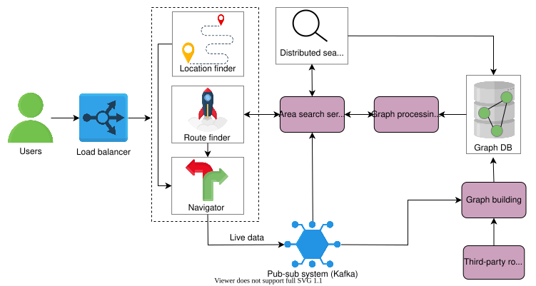
Workflow#
We explain the workflow by assuming that a user has to travel between two points but doesn’t know their current location or how to get to their destination. So, let’s see how the maps system helps.
For this exercise, we assume that the data about road networks and maps has already been collected from the third parties and the graph is built and stored in the Graph DB.
- In a maps system, the user has to enter their starting point and their destination to create a path between the two. For the starting source point, the user uses the current location service.
- The location finder determines the current location by maintaining a persistent connection with the user. The user will provide an updated location using GPS, Wi-Fi, and cellular technology. This will be the user’s source point.
- For the destination point, the user types an address in text format. It’s a good idea to make use of our Typeahead service here to provide useful suggestions and avoid spelling mistakes.
- After entering the source and the destination points, the user requests the optimal path.
- The user’s path request is forwarded to the route-finder service.
- The route finder forwards the requests to an area search service with the source and the destination points.
- The area search service uses the distributed search to find the latitude/longitude for the source and the destination. It then calculates the area on the map spanning the two (source’s and destination’s) latitude/longitude points.
- After finding the area, the area search service asks the graph processing service to process part of the graph, depending on the area to find the optimal path.
- The graph processing service fetches the edges and nodes within that specified area from the database, finds the shortest path, and returns it to the route-finder service that visualizes the optimal path with the distance and time necessary to comeplete the route. It also displays the steps the user should follow for navigation.
- Now that the user can visualize the shortest path on the map, they also want to get directions towards the destination. The direction request is handled by the navigator.
- The navigator tracks that the user is following the correct path, which it has from the route-finder service. It updates the user’s location on the map while the user is moving, and shows where to turn with the distance. If a user deviates from the path, it generates an event that is fed to Kafka.
- Upon receiving the event from the navigator, Kafka updates the subscribed topic of the area search service, which in turn recalculates the optimal path and suggests it to the user. The navigator also provides a stream of live location data to the graph, building it through the pub-sub system. Later, this data can be used to improve route suggestions provided to the users.
API design#
Let’s look at different APIs for the maps service.
Show the user’s current location on the map
The currLocation function displays the user’s location on the map.
currLocation(location)
Parameter | Description |
| This depicts whether the user location is on or off. This call will establish a persistent connection between the client and the server, where the client will periodically update the server about its current location. If the location is |
Find the optimal route
The findRoute function helps find the optimal route between two points.
findRoute(source, destination, transport_type)
Parameter | Description |
| This is the place (in text format) where the users want to start their journey. |
| This is the place (in text format) where the users want to end their journey. |
| This can be a bicycle, car, airplane, and so on. The default transport type is set to a car if the user doesn’t provide this parameter. |
Get directions
The directions function helps us get alerts in the form of texts or sounds that indicate where to turn next and after we’ve traveled how far.
directions(curr_location, steps)
Parameter | Description |
| This is the latitude/longitude value of the user's current location on the map. |
| These are the steps the user should follow in order to reach their destination. |
We described the high-level design by explaining the services we will need. We also discussed API design. Next, we’ll discuss how we met the scalability challenge through segments.
Challenges of Google Maps' Design
Challenges of Google Maps' Design
Let's understand and resolve the key challenges in designing a system like Google Maps.
We'll cover the following
Meeting the challenges#
We listed two challenges in the Introduction lesson: scalability and ETA computation. Let’s see how we meet these challenges.
Scalability#
Scalability is about the ability to efficiently process a huge road network graph. We have a graph with billions of vertices and edges, and the key challenges are inefficient loading, updating, and performing computations. For example, we have to traverse the whole graph to find the shortest path. This results in increased query time for the user. So, what could be the solution to this problem?
The idea is to break down a large graph into smaller subgraphs, or partitions. The subgraphs can be processed and queried in parallel. As a result, the graph construction and query processing time will be greatly decreased. So, we divide the globe into small parts called segments. Each segment corresponds to a subgraph.
Segment#
A segment is a small area on which we can work easily. Finding paths within these segments works because the segment’s road network graph is small and can be loaded easily in the main memory, updated, and traversed. A city, for example, can be divided into hundreds of segments, each measuring 5×5 miles.
Note: A segment is not necessarily a square. It can also be a polygon. However, we are assuming square segments for ease of explanation.
Each segment has four coordinates that help determine which segment the user is in. Each coordinate consists of two values, the latitude and longitude.
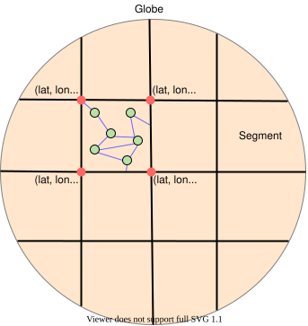
Let’s talk about finding paths between two locations within a segment. We have a graph representing the road network in that segment. Each intersection/junction acts as a vertex and each road acts as an edge. The graph is weighted, and there could be multiple weights on each edge—such as distance, time, and traffic—to find the optimal path. For a given source and destination, there can be multiple paths. We can use any of the graph algorithms on that segment’s graph to find the shortest paths. The most common shortest path algorithm is the Dijkstra’s algorithm.
After running the shortest path algorithm on the segment’s graph, we store the algorithm’s output in a distributed storage to avoid recalculation and cache the most requested routes. The algorithm’s output is the shortest distance in meters or miles between every two vertices in the graph, the time it takes to travel via the shortest path, and the list of vertices along every shortest path. All of the above processing (running the shortest path algorithm on the segment graph) is done offline (not on a user’s critical path).
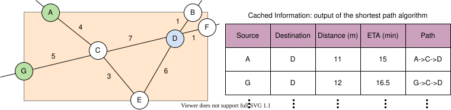
The illustration above shows how we can find the shortest distance in terms of miles between two points. For example, the minimum distance (m) between points A and D is 11 miles by taking the path A->C->D. It has an ETA of 15 minutes.
We’ve found the shortest path between two vertices. What if we have to find the path between two points that lie on the edges? What we do is find the vertices of the edge on which the points lie, calculate the distance of the point from the identified vertices, and choose the vertices that make the shorter total distance between the source and the destination. The distance from the source (and destination) to the nearest vertices is approximated using latitude/longitude values.
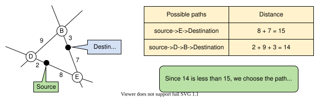
We’re able to find the shortest paths within the segment. Let’s see what happens when the source and the destination belong to two different segments, and how we connect the segments.
Connect two segments#
Each segment has a unique name and boundary coordinates. We can easily identify which location (latitude, longitude) lies in which segment. Given the source and the destination, we can find the segments in which they lie. For each segment, there are some boundary edges, which we call exit points. In the illustration below, we have four exit points, S4E1, S4E2, S4E3, and S4E4.
Note: Besides the vertices we have inside the segment, we also consider the exit points of a segment as vertices and calculate the shortest path for these exit points. So for each segment, we calculate the shortest path between exit points in addition to the shortest path from the exit points to vertices inside the segment. Each vertex’s shortest path information from the segment’s exit points is cached.
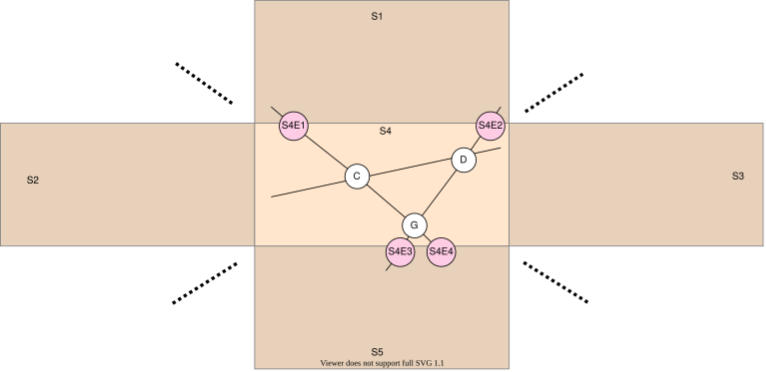
An exit point connects neighboring segments and is shared between them. In the illustration above, each exit point is connecting two segments and each is shared between two segments. For example, the exit point S4E1 is also an exit point for S1. Having all the exit points for each segment, we can connect the segments and find the shortest distance between two points in different segments. While connecting the segments, we don’t care about the inside segment graph. We just need exit points and the cached information about the exit points. We can visualize it as a graph made up of exiting vertices, as shown in the following illustration.
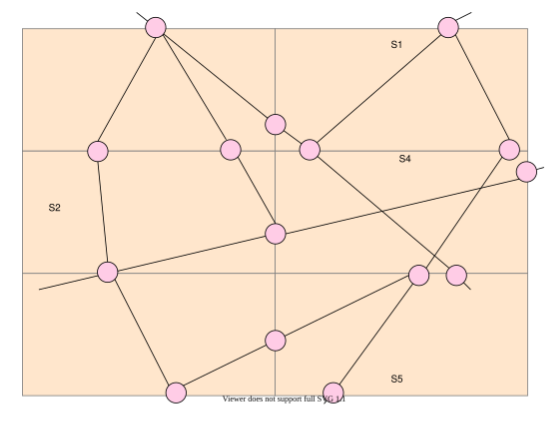
Since we can’t run the shortest path algorithm for all the segments throughout the globe, it’s critical to figure out how many segments we need to consider for our algorithm while traveling inter-segment. The aerial distance between the two places is used to limit the number of segments. With the source and destination points, we can find the aerial distance between them using the haversine formula.
Suppose the aerial distance between the source and the destination is 10 kilometers. In that case, we can include segments that are at a distance of 10 kilometers from the source and destination in each direction. This is a significant improvement over the large graph.
Once the number of segments is limited, we can constrain our graph so that the vertices of the graph are the exit points of each segment, and the calculated paths between the exit points are the graph’s edges. All we have to do now is run the shortest path algorithm on this graph to find the route. The following illustration shows how we find the path between two points that lie in different segments.
Let’s summarize how we met the challenge of scalability. We divided our problem so that instead of working on a large road network as a whole, we worked on parts (segments) of it. The queries for a specific part of the road network are processed on that part only, and for the queries that require processing more than one part of the network, we connect those parts, as we have shown above.
ETA computation#
For computing the ETA with reasonable accuracy, we collect the live location data ((userID, timestamp,(latitude, longitude))) from the navigation service through a pub-sub system. With location data streams, we can calculate and predict traffic patterns on different roads. Some of the things that we can calculate are:
- Traffic (high/medium/low) on different routes or roads.
- The average speed of a vehicle on different roads.
- The time intervals during which a similar traffic pattern repeats itself on a route or road. For example, highway X will have high traffic between 8 to 10 AM.
The information above helps us provide a more accurate ETA. For example, if we know that the traffic will be high at a specific time on a particular road, the ETA should also be greater than usual.
In this lesson, we looked at how we meet the scalability challenge through segments and ETA computation using live data. In the next lesson, we’ll discuss the design in more detail.
Detailed Design of Google Maps
Detailed Design of Google Maps
Let's look into the detailed design of the maps system.
We'll cover the following
In this lesson, we’ll discuss our detailed design by answering the following questions:
- How do user requests benefit from segments?
- How do we improve the user experience by increasing the accuracy of ETAs?
Segment setup and request handling#
This section will describe how the segment data is stored in the database and how user requests are handled using the already stored data.
Starting with the storage schema, we discuss how the segments are added and hosted on the servers and also how the user requests are processed.
Storage schema#
We store the following information for each segment:
Key-value store:
- The segment’s
ID. - The
serverIDon which the segment is hosted. - In reality, each segment is a polygon, so we store boundary
coordinates(latitude/longitude), possibly as a list. - A list of segment IDs of the
neighborssegments.
Graph database
- The road network inside the segment in the form of a
graph.
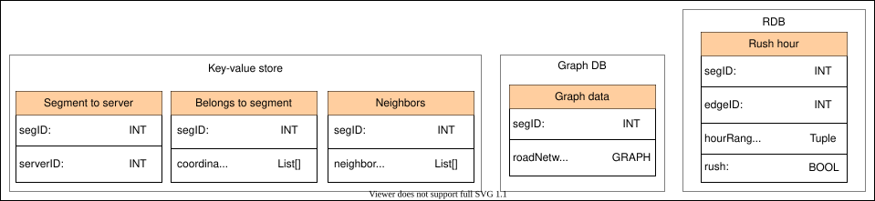
Relational DB
We store the information to determine whether, at a particular hour of the day, the roads are congested. This later helps us decide whether or not to update the graph (weights) based on the live data.
edgeIDidentifies the edge.hourRangetells us which hour of the day it is when there are typical road conditions (non-rush hour) on the road.rushis a Boolean value that depicts whether there is congestion or not on a specific road at a specific time.
Note:
segID,serverID, andedgeIDare unique IDs generated by a uniqueID generator (see the Sequencer lessons for details).
Design#
The following illustration consists of two workflows. One adds segments to the map and hosts them on the severs, while the other shows how the user request to find a path between two points is processed.
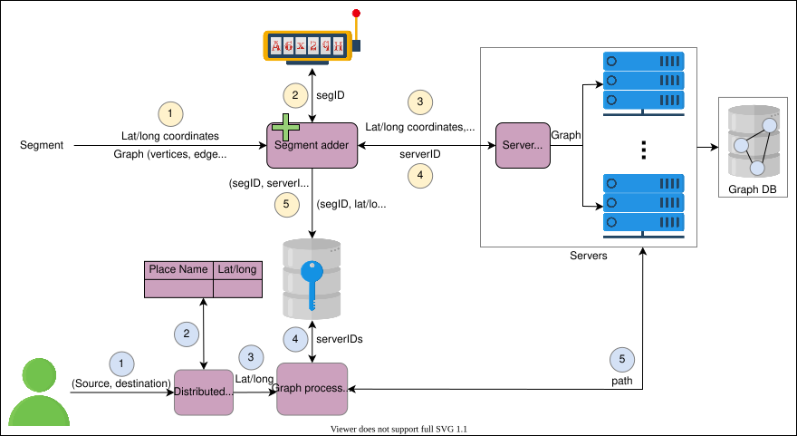
Add segment
- Each segment has its latitude/longitude boundary coordinates and the graph of its road network.
- The segment adder processes the request to add the segment along with the segment information. The segment adder assigns a unique ID to each segment using a unique ID generator system.
- After assigning the ID to the segment, the segment adder forwards the segment information to the server allocator.
- The server allocator assigns a server to the segment, hosts that segment graph on that server, and returns the
serverIDto the segment adder. - After the segment is assigned to the server, the segment adder stores the segment to server mapping in the key-value store. It helps in finding the appropriate servers to process user requests. It also stores each segment’s boundary latitude/longitude coordinates in a separate key-value object.
Handle the user’s request
- The user provides the source and the destination so that our service can find the path between them.
- The latitude and longitude of the source and the destination are determined through a distributed search.
- The latitude/longitude for the source and the destination are passed to the graph processing service that finds the segments in which the source and the destination latitude/longitude lie from the key-value store.
- After finding the segment IDs, the graph processing service finds the servers that are hosting these segments from the key-value store.
- The graph processing service connects to the relevant servers to find the shortest path between the source and the destination. If the source and the destination belong to the same segment, the graph processing service returns the shortest path by running the query only on a single segment. Otherwise, it will connect the segments from different servers, as we have seen in the previous lesson.
Improve estimations using live data#
This section describes how we can improve the ETA estimation accuracy using live data. If we have a sequence of location data for different devices, we can find movement patterns and perform analytics to predict various factors that may influence a user’s trip. Google Maps uses a combination of GPS, Wi-Fi, and cell towers to track users’ locations. To collect this data, our maps system servers need to have a persistent connection with all the devices that have their location turned on. Below, we discuss the tools, techniques, and components involved in the process of improving estimations using live data.
-
WebSocket is a communication protocol that allows users and servers to have a two-way, interactive communication session. This helps in the real-time transfer of data between user and server.
-
The load balancer balances the connection load between different servers since there is a limit on the number of WebSocket connections per server. It connects some devices to server 1, some to server 2, and so on.

- A pub-sub system collects the location data streams (device, time, location) from all servers.
The location data from pub-sub is read by a data analytics engine like Apache Spark. The data analytics engine uses data science techniques—such as machine learning, clustering, and so on—to measure and predict traffic on the roads, identify gatherings, hotspots, events, find out new roads, and so on. These analytics help our system improve ETAs.
Note: The amount of traffic, road conditions, and hotspots directly affect average travel speed, which ultimately affects users’ ETAs.
-
The data analytics engine publishes the analytics data to a new pub-sub topic.
-
The map update service listens to the updates from the pub-sub topic for the analytics. It updates the segment graphs if there is a new road identified or if there is a change in the weight (
average speed (traffic, road condition)) on the edges of the graph. Depending on the location, we know which segment the update belongs to. We find the routing server on which that segment is placed from the key-value store and update the graph on that server.
Point to Ponder
Question
Many traffic conditions are transitory (like stopping at a signal), so updating the graph very often wouldn’t scale well because it requires excessive processing. What could be the solution to this problem?
- The graph preprocessing service recalculates the new paths on the updated segment graph. We’ve seen how the paths are updated continuously in the background based on the live data.
We’ve learned how the segments work, how a user finds the location between two points, and how the ETA's accuracy is improved by utilizing the live location data.
Evaluation of Google Maps' Design
Evaluation of Google Maps' Design
Let’s look at how our map design meets the requirements.
We'll cover the following
Let’s see how the system we designed will handle millions of queries per second, ensuring a fast response time.
Availability#
With a large road network graph hosted on a single server, we ran into these issues:
- We couldn’t process user queries, since it was impossible to load such a large graph into the memory, making the system unavailable to the users.
- It wasn’t possible to make a persistent two-way connection (for navigation) between the server and millions of users per second.
- It was also a single point of failure.
We solved the above problems by dividing the world into small segments. Each small segment consists of a graph that can be easily loaded into a server’s memory. With segments, we completed these objectives:
- We hosted each segment on a separate server, mitigating the issue of loading a large, global graph.
- The load balancer divides the request load across different segment servers depending on the user’s area of search. It mitigates the issue of putting the burden on a single server, which was affecting the system’s availability.
- We didn’t discuss replication, but we can replicate each segment, which will help deal with a segment server as a single point of failure and distribute the request load for a segment to replicas.
Note: Google Maps uses lazy loading of data, putting less burden on the system, which improves availability.
Lazy loading reduces initial load time by reducing the amount of content to load, saves bandwidth by delivering content to users when needed, and preserves server and client resources by rendering only some of the content.
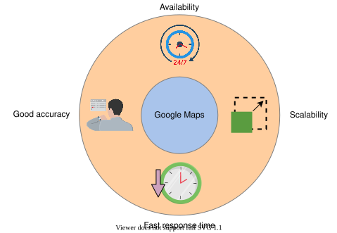
Scalability#
We scaled our system for large road networks. Scalability can be seen in two ways:
- The ability of the system to handle an increasing amount of user requests.
- The ability of the system to work with more data (segments).
We divided the world into small segments. Each segment is hosted on a different server in the distributed system. The user requests for different routes are served from the different segment servers. In this way, we can serve millions of user requests.
Note: It wouldn’t have been possible to serve millions of user requests if we had a single large graph spanning the whole road network. There would have been memory issues loading and processing a huge graph.
We can also add more segments easily because we don’t have to change the complete graph. We can further improve scalability by non-uniformly selecting the size of a segment—selecting smaller segment sizes in densely connected areas and bigger segments for the outskirts.
Smaller response times#
We’re running the user requests on small subgraphs. Processing a small subgraph of hundreds of vertices is far faster than a graph of millions of vertices. We can cache the processed small subgraph in the main memory and quickly respond to user requests. This is how our system responds to the user in less time.
There’s another aspect that helps our system to respond quickly, and that is keeping the segment information in the key-value store. The key-value store helps different services to get the required information quickly.
- The graph processing service checks for the relevant segments in which the source and the destination latitude/longitude lie by querying the key-value store for the
segmentIDvalues. - For load-balancing user requests among different segment servers, the key-value store is queried for the
serverIDagainst the segment on which the graph processing should run for a specific request.
Accuracy#
Besides the road data we had initially, we also captured the live location data of users, on which we performed analytics using data science techniques. Our system improves the accuracy of the results (path, ETA) using these analytics. Based on the analytics of the traffic patterns, the maps are updated, and the routes and ETA estimations are improved.
Requirements | Techniques |
Availability |
|
Scalability |
|
Less response time |
|
Accuracy |
|
Conclusion#
Google Maps is one of the most widely used applications in the world, where users find the shortest route between two locations. A map system models the road network with a graph data structure. To find the route, the shortest path algorithm runs over the graph. We’ve seen scalability issues with a large graph of the road network. We solved the problem by splitting the world into small segments. Each segment consists of a small graph that can be loaded into the memory to find the paths quickly. We’ve also seen that the estimated time of arrival can be improved by analyzing the live location data.